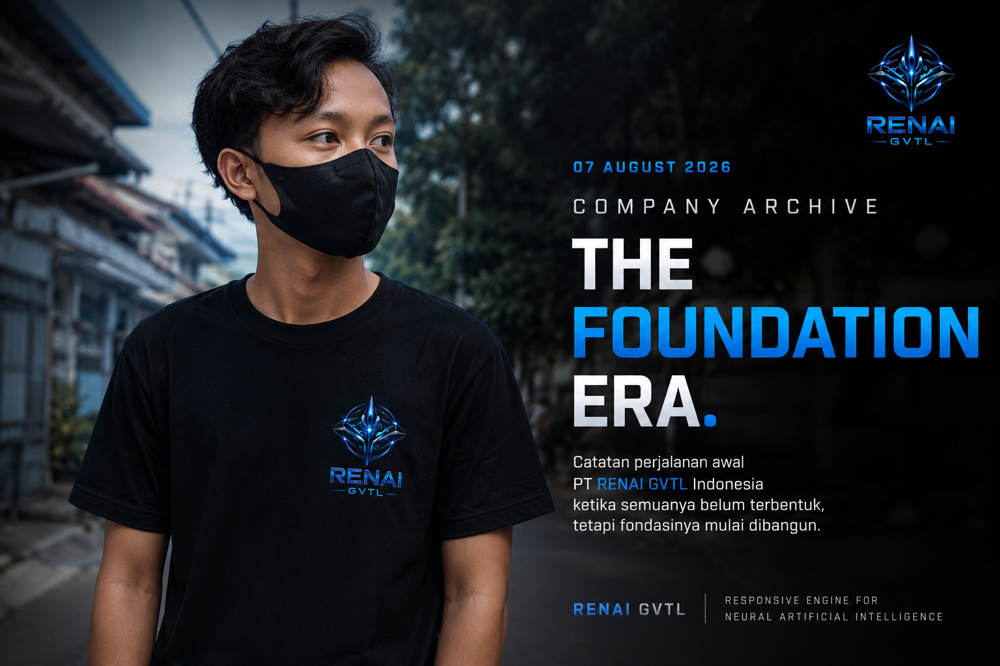

Company Archive — The Foundation Era
Setiap perusahaan memiliki titik awal. Bagi PT RENAI GVTL Indonesia, perjalanan tersebut tidak dimulai dari gedung besar, produk yang telah selesai, atau infrastruktur teknologi milik sendiri.
Perjalanan ini dimulai dari sebuah ide, sebuah nama, sebuah identitas, dan keinginan untuk membangun sesuatu yang lebih besar di masa depan.

Arsip #001 — The Beginning
2026 — Foundation Era.
Pada titik ini, PT RENAI GVTL Indonesia masih berada pada tahap awal pembangunan. Banyak hal masih menjadi rencana, konsep, eksperimen, dan target jangka panjang.
Produk
Belum ada.
Model AI
Belum ada.
Gedung
Belum ada.
Tim
Belum ada.
Infrastruktur Sendiri
Belum ada.
Identitas
Sudah ada.
Website
Sudah ada.
Ide
Terlalu banyak. 😂
👕 The First Shirt
Bahkan sebelum perusahaan memiliki infrastruktur sendiri, identitas RENAI GVTL sudah mulai dibawa ke dunia nyata melalui sebuah kaos.
“Modelnya masih menyusul. Kaosnya sudah berangkat duluan.” 😂
Kaos RenAI GVTL menjadi salah satu bagian kecil dari perjalanan identitas perusahaan pada masa awal.
🌱 Timeline — 2026
-
Ide 💡
Keinginan membangun perusahaan teknologi dan AI. -
Identitas 🎨
Nama RenAI GVTL mulai terbentuk. -
Website 🌐
Website perusahaan mulai dibangun dan dipublikasikan. -
Public Presence 🔎
Informasi mengenai RenAI mulai dapat ditemukan melalui mesin pencari. -
Chat GVTL 💬
Konsep produk pertama mulai dirancang. -
RENAI Router 🧠
Konsep router multi-model mulai dipersiapkan. -
RENAI GPTL 🤖
Model AI sendiri menjadi target pengembangan jangka panjang. -
The First Shirt 👕
Kaos RenAI GVTL dibuat. -
The Road Ahead 🚀
Modal → pengembangan → pilot project → tim → infrastruktur → produk → model sendiri.
BEFORE THE BUILD
Foundation Era bukan sekadar catatan mengenai kapan perusahaan didirikan. Ini adalah dokumentasi tentang bagaimana sebuah perusahaan mulai dibangun dari nol.
“Everything existed except the thing itself.”
Logo sudah ada. Website sudah ada. Kaos sudah ada. Visi sudah ada. Roadmap sudah ada.
Tetapi produk belum lahir, model belum selesai, gedung belum berdiri, dan infrastruktur sendiri belum tersedia.
“Gedungnya belum berdiri, produknya belum lahir, tetapi identitasnya sudah berjalan ke mana-mana.”
📚 Arsip Perjalanan
Halaman News PT RENAI GVTL Indonesia tidak hanya menjadi tempat pengumuman. Seiring waktu, halaman ini juga menjadi dokumentasi perjalanan perusahaan dari masa awal hingga perkembangan berikutnya.
Suatu hari nanti, ketika RENAI GVTL telah berkembang jauh lebih besar, arsip ini akan menjadi pengingat mengenai dari mana semuanya dimulai.
“At this point, the company had no product, no proprietary model, and no building. It had a name, a website, a vision — and a T-shirt that had already traveled farther than the company itself.” 😂👕🌍